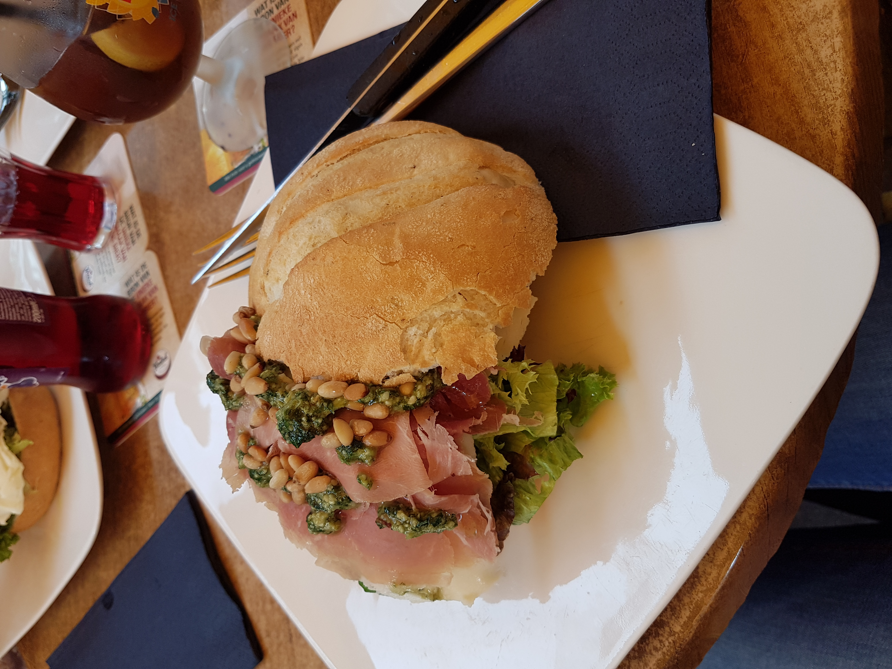

En toen was het alweer donderdag. De vakantie vliegt echt voorbij, maar ik had wel echt uitgekeken naar vandaag. Ik ben namelijk met mama, suzan, mijn tante en nichtje gaan shoppen in Nijmegen. Normaal gesproken zie ik mijn familie niet zo heel vaak. Ook heb ik nog nooit met mijn nichtje geshopt, dus dit was dan wel extra leuk! We kwamen om 11 uur aan op het station van Nijmegen en zijn toen richting het centrum gelopen. Aangekomen in het centrum, zijn we eerst wat warms gaan drinken en daarna kon het shoppen beginnen.
|  | 
|
|---|
Na een aantal uur rondgelopen te hebben, zijn we ergens op een terrasje gaan zitten om lekker te lunchen. Het was echt heel gezellig in de stad en we hadden ook al best veel gekocht. Na onze lange lunch, zijn we verder gegaan. Uiteindelijk zijn we na 2 uur shoppen richting de Waalkade gelopen. Hier hebben we een aantal foto’s gemaakt en gingen we opzoek naar een gezellig restaurantje. Aangezien er bij de Waalkade niet erg veel te beleven was, zijn we weer richting de markt gelopen. Hier zijn we ergens op het terras gaan zitten en hebben we gegeten. Rond een uur of 8 zijn we nog eventjes door de stad gelopen en daarna zijn we weer richting het station gegaan.
 |

|
|---|
Het was een super geslaagde dag!
x Fenna